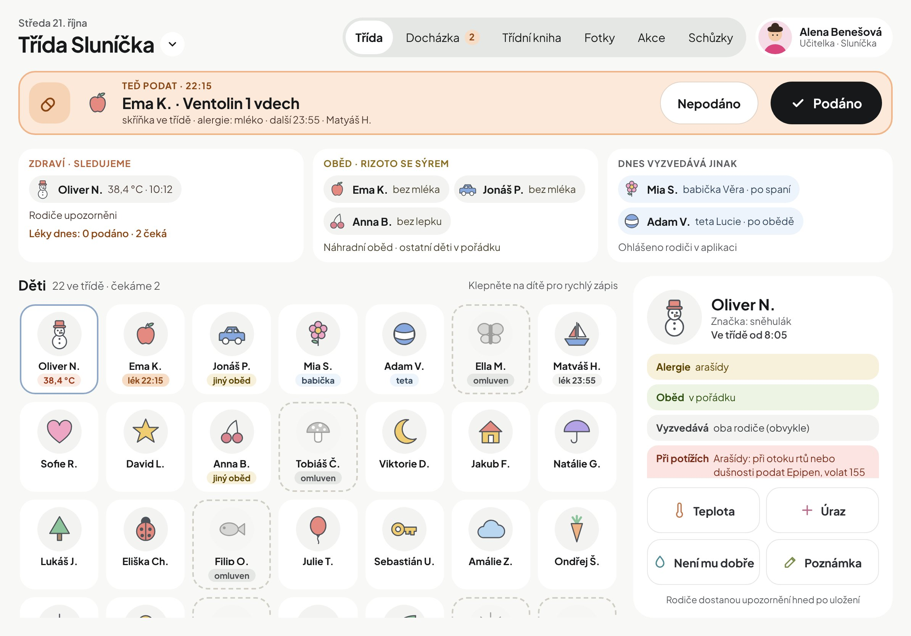
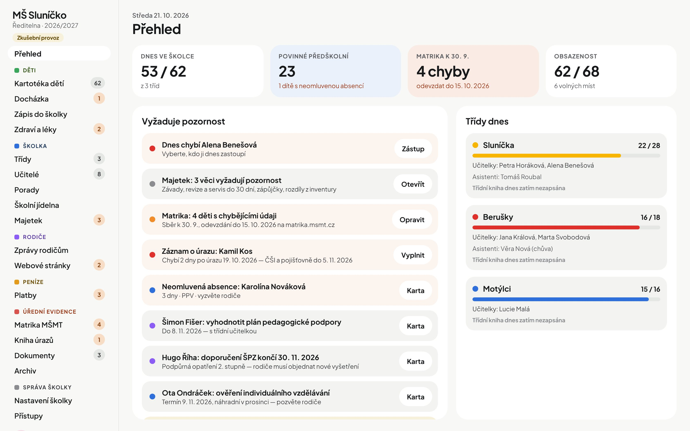

Omluvenky v SMS a na papírku
Rodič omluví v aplikaci. Oběd se odhlásí sám.
Ředitelna, třída i jídelna v jedné aplikaci. Rodiče v LifeOS.


Omluvenky v SMS a na papírku
Rodič omluví v aplikaci. Oběd se odhlásí sám.
Volání rodičům kvůli teplotě
Učitelka zapíše. Rodič to vidí hned.
Párování plateb v Excelu
QR platba. Výpis z banky se spáruje sám.
Matrika na poslední chvíli
Chyby uvidíte dřív, než přijde termín.
Kniha úrazů v šanonu
Úraz z tabletu je v knize hned. I se svědkem.
Kuchyně neví, kolik vařit
Jídelna vidí přesný počet a alergie.